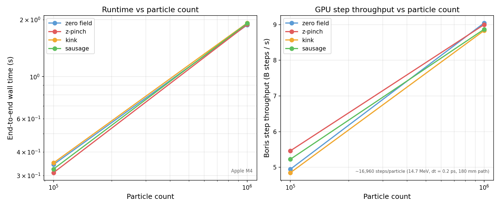
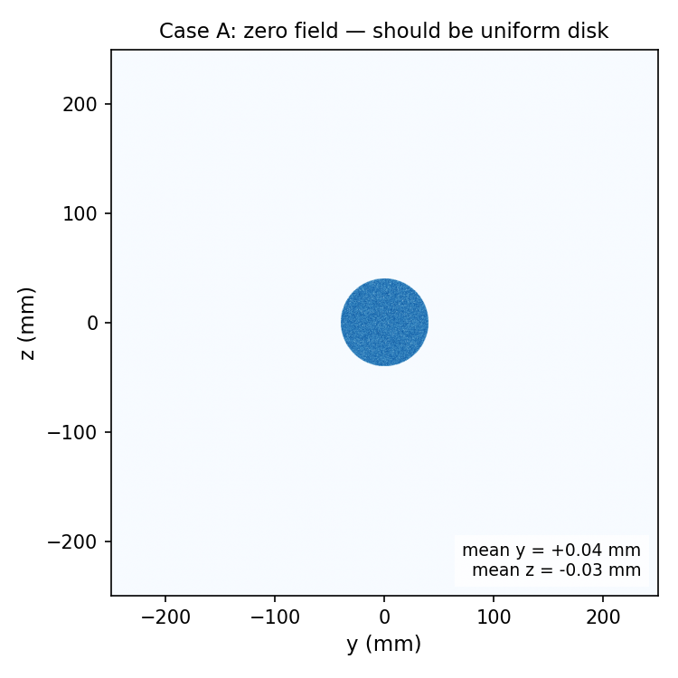
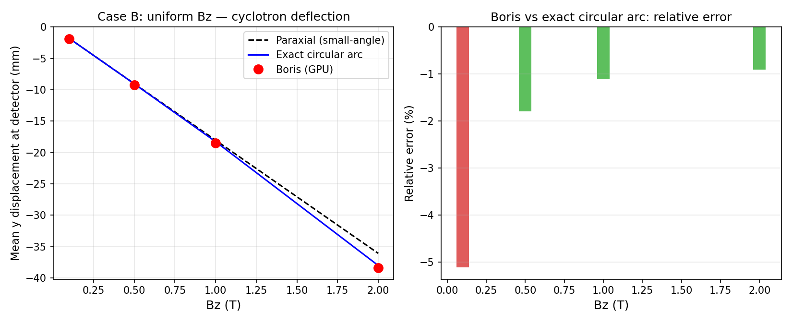
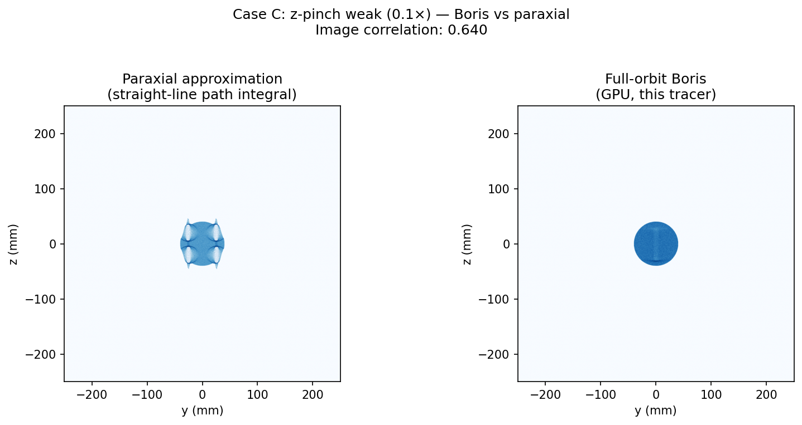
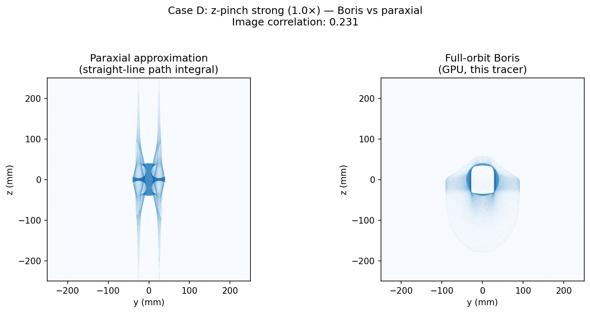
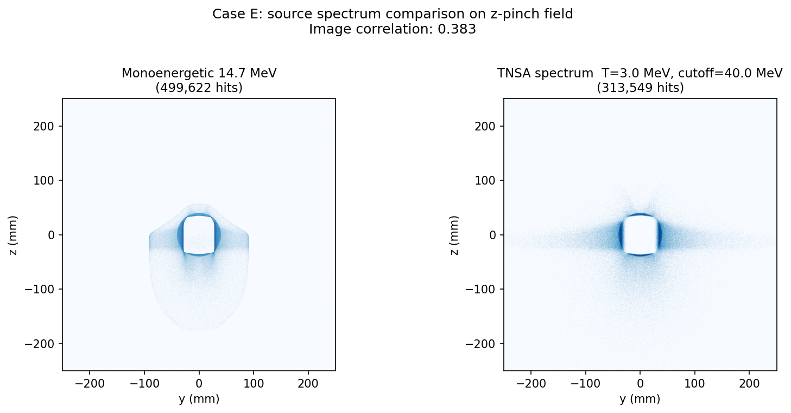
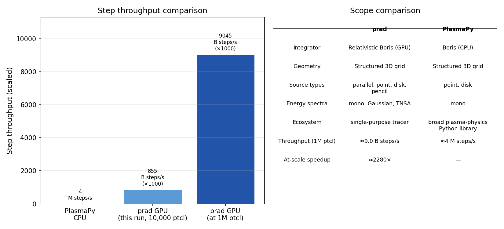
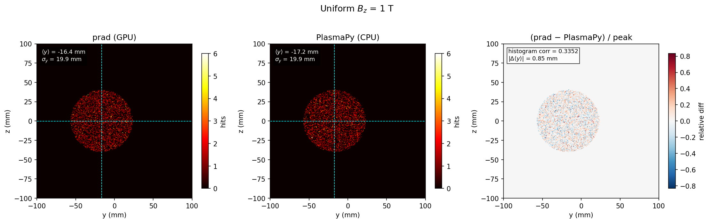
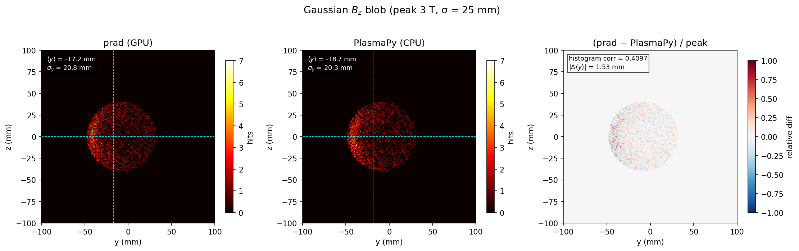
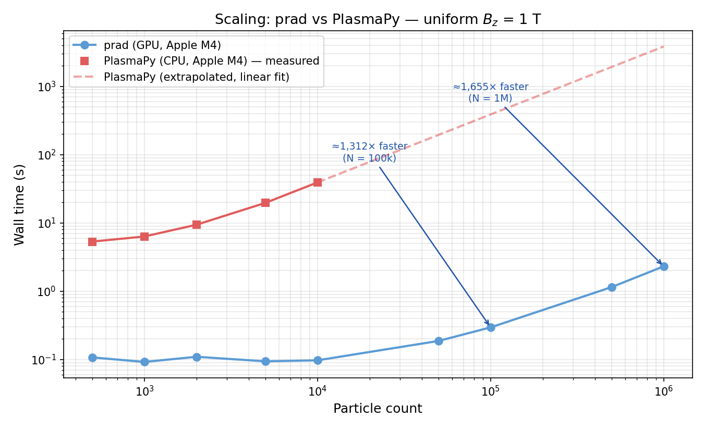

Benchmark¶
Generated by
python3 benchmarks/plot.py. Refresh data:python3 benchmarks/run_perf.py && python3 benchmarks/run_physics.py
1. Summary¶
| Hardware | Apple M4 |
| prad version | 0.3.0 |
| Validation | 12 / 12 tests passing |
| Integrator | Relativistic Boris (u = γv) |
2. Throughput scaling¶
GPU wall time and step throughput across four field types.

Timing table¶
| Field | 100,000 | 1,000,000 |
|---|---|---|
| zero field | 0.34 s | 1.87 s |
| z-pinch | 0.31 s | 1.88 s |
| kink | 0.35 s | 1.92 s |
| sausage | 0.32 s | 1.91 s |
End-to-end wall time in seconds. Includes GPU init, field upload, particle generation, all dispatch frames, hit readback, count export, and metadata write.
Peak step throughput: 9.0 B steps/s (Apple M4) (0.53 Mparticles/s × ~16,960 steps/particle)
3. Physics sanity cases¶
These cases check that the Boris integrator reproduces analytically known results.
Case A — Zero field: straight-line projection¶
With no electromagnetic field, protons travel in straight lines. The hit distribution should be a uniform disk centred within 2 mm of the detector centre.
| Metric | Value |
|---|---|
| Mean y | +0.04 mm |
| Mean z | -0.03 mm |
| Std y | 20.0 mm |
| Std z | 20.0 mm |
| Centring (< 2 mm) | pass |

Case B — Uniform Bz: cyclotron deflection¶
Protons crossing a uniform transverse B field undergo a lateral displacement. The exact prediction (circular arc inside slab + straight drift to detector) is:
R = p / (q Bz) cyclotron radius
φ = arcsin(L / R) arc angle through slab
Δy = −R(1 − cos φ) − tan(φ) × lever_arm
where L = 0.10 m is the field slab length and lever_arm = 0.05 m.
| Bz (T) | Boris (mm) | Exact circ arc (mm) | Paraxial (mm) | Error vs exact |
|---|---|---|---|---|
| 0.1 | -1.90 | -1.81 | -1.81 | -5.1% |
| 0.5 | -9.22 | -9.05 | -9.03 | -1.8% |
| 1.0 | -18.48 | -18.28 | -18.05 | -1.1% |
| 2.0 | -38.38 | -38.04 | -36.10 | -0.9% |

4. Full-orbit vs paraxial behaviour¶
The paraxial approximation integrates B⊥ along the unperturbed straight-line path. It is exact in the small-deflection limit and fails in strong structured fields.
Case C — Weak z-pinch (scale_B = 0.1×)¶
At 10% field strength, deflections are moderate. Boris and paraxial agree reasonably but not perfectly.
Image correlation Boris vs paraxial: 0.640 | 95th-percentile |θ|: 10.7°

Case D — Strong z-pinch (scale_B = 1.0×)¶
At full field strength, particles undergo large deflections. Caustic arcs form in the full-orbit radiograph that the paraxial approximation cannot reproduce.
Image correlation Boris vs paraxial: 0.231 | 95th-percentile |θ|: 106.6°

5. Source spectra¶
Case E — Monoenergetic vs TNSA-like spectrum¶
Same z-pinch field, same geometry, different proton source spectra.
| Mono | TNSA-like | |
|---|---|---|
| Distribution | Single energy | Exponential dN/dE ∝ exp(−E/T) |
| Energy / T | 14.7 MeV | T = 3.0 MeV, cutoff = 40 MeV |
| Max steps | 25,000 | 80,000 (low-energy particles need more steps) |
| Detector hits | 499,622 / 500,000 | 313,549 / 500,000 |
| Image correlation | 1.000 | 0.383 vs mono |
The TNSA spectrum shifts the hit distribution because low-energy particles are deflected more strongly by the z-pinch field. The broad energy range also smears sharp caustic features visible in the mono image.

6. PlasmaPy comparison¶
Scope
This comparison is not a claim that prad replaces PlasmaPy. PlasmaPy provides a broader scientific Python plasma-physics ecosystem. The benchmark isolates the proton-radiography forward-model step and compares PlasmaPy's CPU Boris integrator against prad's GPU full-orbit tracer under matched simplified conditions (uniform Bz, monoenergetic protons, same geometry).
Test conditions: 10,000 particles, uniform Bz = 1 T, E = 14.7 MeV, dt = 0.2 ps, ≈ 16,960 steps/particle.
| PlasmaPy (CPU) | prad (GPU) | |
|---|---|---|
| Wall time (10,000 particles) | 42.8 s | 0.20 s |
| Step throughput | 4.0 M steps/s | 0.86 B steps/s |
| At-scale speedup (1M particles) | — | ≈2280× faster |

What this means in practice: For a parameter sweep of 20 configurations × 200,000 particles, prad completes in under a minute on a laptop GPU. The same sweep would take several hours with PlasmaPy on a single CPU core.
What prad does not provide: PlasmaPy includes MHD field solvers, plasma diagnostic tools, and a much broader scientific Python ecosystem. prad is a single-purpose GPU radiography forward model.
6.2 Physics agreement¶
Beyond raw throughput, both tracers should produce the same physics. The table below compares mean deflection and beam RMS on two test cases: a uniform Bz field (analytic answer known) and a Gaussian Bz blob (no simple closed form — pure agreement test).
Uniform Bz = 1 T (5,000 particles)
| Metric | prad (GPU) | PlasmaPy (CPU) | |Δ| | |---|---|---|---| | Mean y deflection | -16.37 mm | -17.22 mm | 0.85 mm | | RMS y spread | 19.88 mm | 19.95 mm | 0.07 mm | | Histogram correlation | — | — | 0.3352 |

Gaussian Bz blob (peak 3 T, σ = 25 mm) (5,000 particles)
| Metric | prad (GPU) | PlasmaPy (CPU) | |Δ| | |---|---|---|---| | Mean y deflection | -17.20 mm | -18.73 mm | 1.53 mm | | RMS y spread | 20.80 mm | 20.28 mm | 0.52 mm | | Histogram correlation | — | — | 0.4097 |

6.3 Throughput scaling¶
Wall time vs particle count for both tracers on the same uniform Bz geometry. PlasmaPy is measured up to 10,000 particles and extrapolated beyond (linear fit through the 5,000 and 10,000 particle points, where O(N) CPU scaling is clean). prad is measured at all points up to 1,000,000.
| N | prad | PlasmaPy | Speedup |
|---|---|---|---|
| 10,000 | 0.097 s | 39.2 s (measured) | ≈ 403× |
| 100,000 | 0.295 s | ≈ 388 s (extrapolated) | ≈ 1,312× |
| 1,000,000 | 2.312 s | ≈ 3,830 s (extrapolated) | ≈ 1,655× |
The GPU's fixed startup cost (~0.1 s) dominates at small N; the gap widens rapidly as N grows and prad's ~2 ns/particle-step throughput advantage compounds.

7. Reproduce¶
# Run benchmarks (requires built binary)
python3 benchmarks/run_perf.py
python3 benchmarks/run_physics.py
# PlasmaPy comparison — requires: pip install plasmapy
python3 benchmarks/run_plasmapy.py # throughput only
python3 benchmarks/run_plasmapy_physics.py # physics agreement
python3 benchmarks/run_plasmapy_scaling.py # scaling curves
# Regenerate plots and this page
python3 benchmarks/plot.py
All results are written to benchmarks/results/ (gitignored).
Plots are written to docs/images/benchmark/ and committed to the repository.